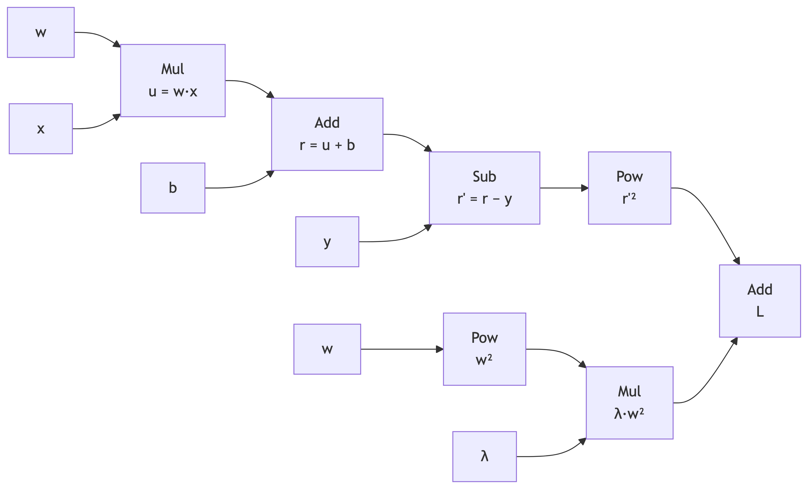

03 自动微分
本章的练习围绕四个问题展开：为什么从闭式解转向迭代、计算图怎样组织反向传播、梯度的生命周期如何管理、以及自动微分的工程代价。题目与正文的对应关系如下：
- 练习 1～3 对应「从解析解到数值解」「理解计算图」「梯度的三部曲」，以推导和手算为主；
- 练习 4～6 对应「张量视角的模型构建」「梯度的累加机制」「上下文管理」「引入优化器」，需要在 R 中运行代码；
- 练习 7 是开放题，讨论解析解、一阶优化与自动微分在真实工程中的边界；
- 练习 8 是纠错题，检验你能否发现梯度清零、原地更新、张量布尔判断与计算图滞留中的常见陷阱。
建议总用时 2.5～3 小时。编程题请先读完题干再动手，固定随机种子后再比较结果。
一、概念与推导
练习 1：正规方程、Hessian 与学习率上限
本章用 mtcars 的车重 wt 与马力 hp 预测油耗 mpg。记标准化后的特征矩阵为 \(X\)（\(32 \times 3\)，第一列全为 1，后两列是标准化后的 wt、hp），响应向量为 \(y\)，参数为 \(w=(b,w_{\mathrm{wt}},w_{\mathrm{hp}})^\top\)。损失函数取均方误差：
\[ L(w)=\frac{1}{N}\lVert Xw-y\rVert_2^2,\qquad N=32. \]
请回答：
- （a） 写出 \(\nabla_w L(w)\) 与 Hessian 矩阵 \(H=\nabla_w^2 L(w)\)，并由 \(\nabla L=0\) 推出正规方程。为什么代码里要显式加一列截距，而不能只对两列特征做回归？
- （b） 对二次损失证明：若 \(w^*\) 是最优解、\(e_t=w_t-w^*\)，则梯度下降的误差满足 \[ e_{t+1}=(I-\eta H)e_t. \] 由此给出步长 \(\eta\) 的稳定条件。用 R 计算本数据 \(H\) 的特征值、\(\lambda_{\max}\) 与步长上限，并判断正文取 \(\eta=0.1\) 是否安全。
- （c） 分别对“原始尺度 + 截距”和“标准化 + 截距”计算 \(H\) 的条件数。解释为什么特征尺度差异会导致 zigzag，而标准化能缓解它。
- （d）
lm()为什么采用带列主元的 QR 分解，而不是直接计算 \((X^\top X)^{-1}X^\top y\)？当 \(p\) 很大或 \(n\gg p\) 时，正规方程与迭代梯度法的适用边界分别在哪里？
注记练习 1 参考答案
（a） 把残差记为 \(r=Xw-y\)，则
\[ L=\frac{1}{N}r^\top r, \qquad \nabla_w L=\frac{2}{N}X^\top r=\frac{2}{N}X^\top(Xw-y), \qquad H=\frac{2}{N}X^\top X. \]
令梯度为零：
\[ X^\top(Xw-y)=0 \quad\Longrightarrow\quad X^\top X\,w=X^\top y \quad\Longrightarrow\quad w=(X^\top X)^{-1}X^\top y. \]
截距列的作用是让模型可以平移：若不带截距，模型被强制过原点，即 \(y=0\) 时预测必须为 0。对 mpg 这种均值约为 20 的响应，这会引入巨大的系统性偏差。标准化特征只改变斜率尺度，不会消除截距；因此设计矩阵仍应包含全 1 列。
（b） 在最优解处 \(\nabla L(w^*)=0\)，而 \(H\) 是常数矩阵（二次损失），所以
\[ \nabla L(w_t)=H(w_t-w^*)=He_t. \]
代入 \(w_{t+1}=w_t-\eta\nabla L(w_t)\)：
\[ e_{t+1}=e_t-\eta He_t=(I-\eta H)e_t. \]
把 \(H\) 正交对角化为 \(H=Q\Lambda Q^\top\)，并令 \(u_t=Q^\top e_t\)，则每个特征方向独立演化：
\[ u_{t+1,i}=(1-\eta\lambda_i)u_{t,i}. \]
该分量收敛到 0 当且仅当 \(|1-\eta\lambda_i|<1\)，即 \(0<\eta<2/\lambda_i\)。要对所有方向同时成立，需
\[ 0<\eta<\frac{2}{\lambda_{\max}}. \]
本数据的 \(H\) 与特征值：
X <- cbind(1, scale(mtcars[, c("wt", "hp")]))
H <- (2 / nrow(X)) * crossprod(X)
eigen(H, symmetric = TRUE)$values
# [1] 3.213824 2.000000 0.661176
2 / max(eigen(H, symmetric = TRUE)$values)
# [1] 0.6223116所以 \(\lambda_{\max}=3.213824\)，步长上限约为 0.6223。正文取 \(\eta=0.1\)，远低于上限，稳定；若取 \(\eta=1\)，最大的特征方向会以 \(1-\eta\lambda_{\max}\approx-2.21\) 的因子反复放大，训练必然发散。
（c） 原始尺度设计矩阵的条件数：
X_raw <- cbind(1, mtcars$wt, mtcars$hp)
kappa(crossprod(X_raw), exact = TRUE, norm = "2")
# [1] 345403.4标准化后：
kappa(crossprod(X), exact = TRUE, norm = "2")
# [1] 4.859299数量级从 \(3.45\times10^5\) 降到约 4.86。条件数是最大与最小奇异值之比；对 \(X^\top X\) 来说，这个比值等于 \(X\) 的条件数的平方，所以原始数据的病态程度被平方放大。
几何上，均方误差的等高线是椭球。条件数大时，椭球在一个方向很陡、另一个方向很平，负梯度几乎垂直于“指向最优点的方向”，于是参数会在狭长山谷两侧来回折返，形成 zigzag。标准化把各特征的尺度拉到同一量级，使椭球接近球形，梯度方向更直接指向最优点。注意标准化不能改变特征之间的相关性；若两列高度相关，条件数仍然可能很大，需要正则化或降维。
（d） 直接算 \((X^\top X)^{-1}X^\top y\) 有两个问题：
- 先构造 \(X^\top X\) 会把条件数平方。原始数据 \(X\) 的条件数约 \(\sqrt{3.45\times10^5}\approx587\)，而 \(X^\top X\) 的条件数已经是 \(3.45\times10^5\)；在浮点数下，求逆会进一步损失有效数字。
- 显式求逆需要 \(O(p^3)\) 时间和 \(O(p^2)\) 内存，且
solve()并不承诺使用最稳定的分解。
带列主元的 QR 分解满足 \(X=QR\)，最小二乘解由 \(R w=Q^\top y\) 回代得到。它不形成 \(X^\top X\)，避免条件数平方；列主元还能在接近秩亏时把“最健康”的列选为主元。lm() 正是这样做的。
适用边界可以粗略记为：
- \(p\) 不大（几千以内）、需要精确解或统计推断（标准误、置信区间）时，QR/正规方程都可行，优先 QR。
- \(p\) 很大（例如 \(10^5\) 维）时，\(X^\top X\) 需要 \(p^2\) 个元素，存不下也求不了逆；应使用迭代法、随机梯度或矩阵-free 方法。
- \(n\gg p\) 时，正规方程在内存上可行，但条件数平方仍可能损失精度；QR 或带正则的最小二乘更稳妥。若 \(n\) 极大、只需求近似解，mini-batch 梯度下降更合适。
练习 2：分支计算图与手算反向传播
考虑带 L2 正则的标量函数
\[ L(w,b)=(wx+b-y)^2+\lambda w^2, \]
其中 \(w=2\)、\(x=3\)、\(b=1\)、\(y=5\)、\(\lambda=0.5\)。
请回答：
- （a） 画出这个函数的计算图。列出每个运算节点及其局部导数，并指出 \(w\) 在图中出现了几次、梯度会沿哪几条路径回到 \(w\)。
- （b） 不借助 torch，手算前向值 \(L\) 以及 \(\partial L/\partial w\)、\(\partial L/\partial b\)。
- （c） 用 torch 实现并验证。打印
loss$grad_fn与loss$grad_fn$next_functions，解释为什么根节点是加法反向节点，以及为什么 \(w\) 的梯度是两条路径贡献之和。 - （d） 若在中间量 \(r=wx+b-y\) 上调用
retain_grad()，r$grad是多少？不调用时r$grad会怎样？这说明叶节点与中间节点的.grad有什么区别？
注记练习 2 参考答案
（a） 计算图可以写成：
各节点的局部导数：
| 节点 | 输出 | 对输入的局部导数 |
|---|---|---|
Mul |
\(u=wx\) | \(\partial u/\partial w=x=3\)，\(\partial u/\partial x=w=2\) |
Add |
\(r=u+b\) | 对 \(u\)、\(b\) 都是 1 |
Sub |
\(r'=r-y\) | 对 \(r\) 是 1，对 \(y\) 是 \(-1\) |
Pow |
\(r'^2\) | 对 \(r'\) 是 \(2r'\) |
Pow |
\(w^2\) | 对 \(w\) 是 \(2w\) |
Mul |
\(\lambda w^2\) | 对 \(w^2\) 是 \(\lambda\) |
Add |
\(L\) | 对两个分支都是 1 |
\(w\) 出现了两次：一次在数据项 \(wx\) 中，一次在正则项 \(\lambda w^2\) 中。反向传播时，两条路径各自把梯度送到叶子节点 \(w\)，在 AccumulateGrad 处相加。
（b） 先算残差：
\[ r=wx+b-y=2\cdot3+1-5=2. \]
前向值：
\[ L=r^2+\lambda w^2=2^2+0.5\cdot2^2=4+2=6. \]
梯度：
\[ \frac{\partial L}{\partial w} =2r\cdot x+2\lambda w =2\cdot2\cdot3+2\cdot0.5\cdot2 =12+2=14, \]
\[ \frac{\partial L}{\partial b}=2r\cdot1=4. \]
（c） 代码与输出：
library(torch)
w <- torch_tensor(2, requires_grad = TRUE)
x <- torch_tensor(3) # 输入不需要梯度
b <- torch_tensor(1, requires_grad = TRUE)
y <- torch_tensor(5) # 标签不需要梯度
lambda <- 0.5
r <- w * x + b - y
loss <- r^2 + lambda * w^2
loss$grad_fn$print()
# AddBackward0
loss$grad_fn$next_functions
# [[1]]
# PowBackward0
#
# [[2]]
# MulBackward0
loss$backward()
w$grad$item() # 14
b$grad$item() # 4根节点是 AddBackward0，因为 \(L\) 的最后一步是“数据项 + 正则项”的加法。它的两个 next_functions 分别指向数据项的 PowBackward0 和正则项的 MulBackward0。反向传播从根节点出发，沿两条路径分别计算：
- 数据项路径：\(2r\cdot x=12\)；
- 正则项路径：\(2\lambda w=2\)。
两条路径的梯度在叶子 \(w\) 的 AccumulateGrad 节点相加，得到 14。这也解释了为什么同一个张量在图中被多次使用时，梯度会自动累加，而不需要手写“把两条路径加起来”。
（d） r 是中间节点。默认情况下，torch 只保留叶节点的 .grad，以节省内存；直接访问 r$grad 会得到 NULL，并可能触发“非叶张量的 .grad 不会被填充”的警告。在新图上调用 r$retain_grad() 后：
w <- torch_tensor(2, requires_grad = TRUE)
x <- torch_tensor(3)
b <- torch_tensor(1, requires_grad = TRUE)
y <- torch_tensor(5)
lambda <- 0.5
r <- w * x + b - y
r$retain_grad()
loss <- r^2 + lambda * w^2
loss$backward()
r$grad$item()
# 4如果复用的图已经执行过一次 backward()，第二次反传需要 retain_graph = TRUE；常规训练每轮都重建图，不存在这个问题。
因为 \(\partial L/\partial r=2r=4\)。这说明：
- 叶节点（
w、b）的梯度默认保留，供优化器读取； - 中间节点的梯度默认丢弃，除非显式
retain_grad()； - 需要做梯度可视化、梯度裁剪的中间量，或者调试“梯度在哪一层消失”时，才应保留中间梯度。
练习 3：数值微分、符号微分与自动微分的成本
请回答：
- （a） 写出中心差分公式 \[ f'(x)\approx\frac{f(x+h)-f(x-h)}{2h}, \] 并对 \(f(x)=e^x\) 在 \(x=2\) 处取 \(h=10^{-2},10^{-4},10^{-6},10^{-8},10^{-12}\)，计算相对误差。解释为什么误差随 \(h\) 先降后升，以及“最优 \(h\)”大约在什么量级。
- （b） 用 R 的
D()对 \(e^{x^2}\) 求符号导数。说明符号微分为什么在深度网络中会遇到“表达式膨胀”。 - （c） 设 \(f:\mathbb{R}^n\to\mathbb{R}^m\)。前向模式与反向模式各需要多少次“传播”才能得到完整雅可比？为什么标量损失的反向传播只需要一次反向扫描，成本约为前向的 2～3 倍？
- （d） 设计一个梯度检查方案：给定一个手写的损失函数和 torch 的自动微分结果，如何用中心差分验证？为什么要用 float64、取多大的 \(h\)、比较什么误差指标？
注记练习 3 参考答案
（a） 中心差分的截断误差是 \(O(h^2)\)，舍入误差约为 \(O(\epsilon/h)\)，其中 \(\epsilon\) 是机器精度。前者随 \(h\) 减小而下降，后者随 \(h\) 减小而上升，所以总误差呈 U 形。对双精度，\(\epsilon\approx2.2\times10^{-16}\)，最优 \(h\) 大约在 \(\epsilon^{1/3}\approx6\times10^{-6}\) 附近。
实测 \(f(x)=e^x\)、\(x=2\)、精确值 \(e^2=7.38905609893065\)：
| \(h\) | 中心差分 | 相对误差 |
|---|---|---|
| \(10^{-2}\) | 7.389179250481 | \(1.67\times10^{-5}\) |
| \(10^{-4}\) | 7.389056111253 | \(1.67\times10^{-9}\) |
| \(10^{-6}\) | 7.389056098983 | \(7.10\times10^{-12}\) |
| \(10^{-8}\) | 7.389056033702 | \(8.83\times10^{-9}\) |
| \(10^{-12}\) | 7.389644451905 | \(7.96\times10^{-5}\) |
代码：
f <- function(x) exp(x)
exact <- exp(2)
for (h in c(1e-2, 1e-4, 1e-6, 1e-8, 1e-12)) {
fd <- (f(2 + h) - f(2 - h)) / (2 * h)
cat(sprintf("h=%.0e fd=%.12f relerr=%.3e\n",
h, fd, abs(fd - exact) / exact))
}若函数是二次的，中心差分在数学上精确（三阶导数为 0），表中的误差只剩舍入误差；这也是“用二次函数测试有限差分”容易误判精度的原因。
（b） 例如：
D(expression(exp(x^2)), "x")
# exp(x^2) * (2 * x)对单层函数，符号结果很紧凑；但深度网络是成百上千个基本函数的复合，符号求导会把中间表达式反复代入，产生大量重复子表达式。若不做公共子表达式消除，表达式长度会指数或组合式膨胀，最终既占内存又拖慢求值。符号微分给出的是“公式”，不是“某个点上的数值”，这在需要反复计算不同输入的梯度时也不划算。
（c） 对 \(f:\mathbb{R}^n\to\mathbb{R}^m\)：
- 前向模式一次传播计算一个方向的方向导数（一个 JVP），要覆盖 \(n\) 个输入方向，需要约 \(n\) 次传播；
- 反向模式一次传播计算一个输出对应的梯度（一个 VJP），要覆盖 \(m\) 个输出方向，需要约 \(m\) 次传播。
深度学习的损失是标量，\(m=1\)，所以一次反向扫描就能得到全部 \(n\) 个参数的梯度。反向传播仍要先做一次前向、再做一次反向；反向每层还要读取前向保存的中间量，所以工程成本通常是前向的 2～3 倍，而不是 \(n\) 倍。若 \(n\ll m\)（例如多输出且输入很少），前向模式反而更便宜。
（d） 一个可操作的检查方案：
- 把参数和输入转成
torch_float64()；float32 的有效位数只有约 7 位，差分噪声会淹没真实误差。 - 选中心差分，\(h\) 取 \(10^{-5}\) 到 \(10^{-6}\) 量级；对每个待检查的参数分量，计算 \[
\frac{L(\theta+h e_i)-L(\theta-h e_i)}{2h}
\] 与
autograd的theta$grad[i]比较。 - 使用相对误差 \[ \frac{|g_{\mathrm{fd}}-g_{\mathrm{ad}}|}{\max(1,|g_{\mathrm{fd}}|,|g_{\mathrm{ad}}|)}, \] 而不是绝对误差；否则大梯度处的正常差异会被误判，小梯度处的噪声又会被忽略。
- 不必检查全部参数。随机抽几十个分量，或沿随机方向做一次投影检查，就足以发现大多数实现错误；全量检查的代价是每个参数两次前向。
二、编程实践
练习 4：解析解、手写梯度下降与 Autograd 的三版本对照
请用 mtcars 的 wt、hp 预测 mpg，完成三个版本并比较：
- （a） 解析解：标准化特征、加截距列，用正规方程求系数。
- （b） 手写梯度下降：用本章的均方误差梯度公式，固定
set.seed(123)、学习率 0.1、训练 100 轮，记录最终系数。 - （c） torch Autograd：用
torch_manual_seed(123)初始化w、b，用loss$backward()和with_no_grad()更新，训练同样的 100 轮。 - （d） 把三组系数与正文的表格对照，计算最终模型的 MSE 与 RMSE。解释为什么 torch 版本与解析解在小数第四位会有差异；如果训练 1000 轮而不是 100 轮，差异会怎样变化？
注记练习 4 参考答案
（a） 解析解：
x_raw <- mtcars[, c("wt", "hp")]
y_raw <- mtcars$mpg
x_scaled <- scale(x_raw)
X <- cbind(1, x_scaled)
beta_hat <- solve(crossprod(X), crossprod(X, y_raw))
drop(beta_hat)
# [1] 20.090625 -3.794292 -2.178444（b） 手写梯度下降：
set.seed(123)
w <- matrix(rnorm(2), nrow = 2)
b <- 0
learning_rate <- 0.1
epochs <- 100
n_samples <- nrow(x_scaled)
for (i in 1:epochs) {
y_pred <- x_scaled %*% w + b
error <- y_pred - y_raw
w_grad <- (2 / n_samples) * (t(x_scaled) %*% error)
b_grad <- (2 / n_samples) * sum(error)
w <- w - learning_rate * w_grad
b <- b - learning_rate * b_grad
}
cat(b, drop(w), "\n")
# 20.09062 -3.793605 -2.179132（c） torch Autograd：
library(torch)
torch_manual_seed(123)
x_raw <- mtcars[, c("wt", "hp")]
y_raw <- mtcars$mpg
x_scaled <- scale(x_raw)
learning_rate <- 0.1
x_tensor <- torch_tensor(x_scaled, dtype = torch_float())
y_tensor <- torch_tensor(y_raw, dtype = torch_float())$view(c(-1, 1))
w <- torch_randn(c(2, 1), dtype = torch_float(), requires_grad = TRUE)
b <- torch_zeros(c(1, 1), dtype = torch_float(), requires_grad = TRUE)
for (epoch in 1:100) {
y_pred <- torch_matmul(x_tensor, w) + b
loss <- (y_pred - y_tensor)$pow(2)$mean()
loss$backward()
with_no_grad({
w$sub_(learning_rate * w$grad)
b$sub_(learning_rate * b$grad)
w$grad$zero_()
b$grad$zero_()
})
}
cat(b$item(), as.numeric(w), "\n")
# 20.09062 -3.793552 -2.179184（d） 三组结果：
| 方法 | 截距 | wt |
hp |
MSE |
|---|---|---|---|---|
| 解析解 | 20.090625 | -3.794292 | -2.178444 | 6.095242 |
| 手写 GD | 20.09062 | -3.793605 | -2.179132 | 6.09524 |
| torch Autograd | 20.09062 | -3.793552 | -2.179184 | 6.095243 |
RMSE 为 \(\sqrt{6.095242}\approx2.468855\)。三者差异在 \(10^{-4}\) 量级，相对于系数本身（约 2～20）是 \(10^{-5}\) 的相对误差，可以忽略。
差异的来源有两类：
- 精度：解析解和手写 GD 在 R 的 double 上运算；torch 默认
torch_float()，只有约 7 位有效数字，累加 100 轮后系数在小数第四位出现差异是正常的。 - 优化轨迹：100 轮梯度下降并没有完全收敛到最优点；初始化和步长会影响最终停在哪里。torch 与手写 GD 的初始化不同（一个用
rnorm，一个用torch_randn），轨迹自然不同。
如果把轮数增加到 1000，两者的系数都会更接近解析解，差距会缩小；但 float32 的舍入误差不会消失。若把 torch 张量改成 torch_float64()，精度差异会进一步减小，代价是内存和计算速度。
练习 5：梯度累加与 micro-batch 的等价条件
假设显存放不下完整的 batch，你把 \(N=8\) 个样本切成 4 个大小为 2 的小块，逐块 backward()，最后统一更新一次。请回答：
- （a） 设完整 batch 的损失为 \(L=\frac{1}{N}\sum_{i=1}^N r_i^2\)。写出完整梯度，以及第 \(k\) 个 chunk 的梯度。证明：若每个 chunk 用“均值损失”，直接累加得到的是完整梯度的 4 倍；要得到完整梯度，每个 chunk 的损失应乘上什么因子？
- （b） 用 torch 构造一组 \(8\times3\) 的随机数据，分别计算完整 batch 的梯度和“按比例缩放后的 4 个 chunk 梯度之和”，比较最大绝对差。
- （c） 不做缩放，直接对 4 个 chunk 的均值损失调用
backward()，累加后的梯度与完整梯度是什么比例？如果学习率不变，参数更新会怎样？ - （d） 在这个循环里，
zero_grad()应该放在什么位置？如果把它放在backward()之后、step()之前，会发生什么？放在step()之后呢？
注记练习 5 参考答案
（a） 记第 \(k\) 个 chunk 的样本索引集合为 \(S_k\)，大小为 \(n_k\)，残差为 \(r_k\)。完整梯度：
\[ g=\frac{2}{N}X^\top r=\frac{2}{N}\sum_{k=1}^{K}X_k^\top r_k. \]
第 \(k\) 个 chunk 的均值损失梯度：
\[ g_k=\frac{2}{n_k}X_k^\top r_k. \]
直接累加：
\[ \sum_{k=1}^{K}g_k =\sum_{k=1}^{K}\frac{2}{n_k}X_k^\top r_k. \]
若所有 chunk 大小相同 \(n_k=N/K\)，则
\[ \sum_{k=1}^{K}g_k =K\cdot\frac{2}{N}X^\top r =K g. \]
所以直接累加得到 \(K\) 倍梯度。要恢复 \(g\)，每个 chunk 的损失应乘上 \(n_k/N\)：
\[ \tilde L_k=\frac{n_k}{N}\,L_k \quad\Longrightarrow\quad \nabla\tilde L_k=\frac{2}{N}X_k^\top r_k, \]
再累加即可。等价地，也可以对 chunk 使用“平方和”损失，最后在更新前把总梯度除以 \(N\)。
（b） 代码：
library(torch)
torch_manual_seed(42)
N <- 8
p <- 3
X <- torch_randn(c(N, p))
y <- torch_randn(c(N, 1))
w <- torch_randn(c(p, 1), requires_grad = TRUE)
b <- torch_zeros(1, requires_grad = TRUE)
# 完整 batch
pred <- torch_matmul(X, w) + b
loss <- (pred - y)$pow(2)$mean()
loss$backward()
g_full_w <- w$grad$clone()
g_full_b <- b$grad$clone()
w$grad$zero_()
b$grad$zero_()
# 4 个 chunk，按 n_k / N 缩放
for (idx in list(1:2, 3:4, 5:6, 7:8)) {
xb <- X[idx, , drop = FALSE]
yb <- y[idx, , drop = FALSE]
loss_k <- ((torch_matmul(xb, w) + b - yb)^2)$mean() *
(length(idx) / N)
loss_k$backward()
}
torch_max(torch_abs(g_full_w - w$grad))$item()
# [1] 1.490116e-08
abs(g_full_b$item() - b$grad$item())
# [1] 5.960464e-08差异在 float32 的舍入量级，说明缩放后的累加与完整 batch 数值等价。
（c） 不做缩放时，累加梯度是完整梯度的 \(K=4\) 倍。实测偏置梯度为 \(-3.872932\)，而完整 batch 的偏置梯度为 \(-0.9682329\)，比值正好是 4。
如果学习率不变，等价于把学习率放大了 4 倍：每一步更新幅度变成原来的 4 倍，轻则震荡，重则发散。常见修正有三种：
- 每个 chunk 的损失乘 \(n_k/N\)（推荐，梯度本身就可直接累加）；
- 对 chunk 用平方和损失，更新前把累加梯度除以 \(N\)；
- 保持均值损失，但把学习率除以 \(K\)（只适用于所有 chunk 等大的情况）。
（d） 标准顺序是：
for (batch in batches) {
optimizer$zero_grad() # 1. 清空上一轮
loss <- ... # 2. 前向
loss$backward() # 3. 反向，写入 grad
optimizer$step() # 4. 更新
}- 若把
zero_grad()放在backward()之后、step()之前：刚算出的梯度被清零，step()看不到任何梯度，参数不变（实测 \(w\) 停在 2）。 - 若放在
step()之后：本轮更新已经完成，清零只是为下一轮做准备，完全正确。此时它等价于放在下一轮循环开头。 - 真正危险的是“完全不清零”：第 \(k\) 轮的梯度包含前 \(k\) 轮所有梯度的累加，更新步长越来越大。
练习 6：with_no_grad、detach() 与 item() 的边界
请回答：
- （a）
with_no_grad({ ... })中的运算还会构建计算图吗？如果块内创建一个requires_grad = TRUE的张量，它的grad_fn是什么？ - （b）
detach()与item()各自返回什么？它们是否复制底层数据？各自适合什么场景？ - （c） 写一段代码验证：普通前向得到的张量有
grad_fn；在with_no_grad()中得到的张量没有grad_fn；detach()后的张量requires_grad = FALSE、grad_fn = NULL，但仍与原张量共享存储。 - （d） 在训练循环里把每个
loss张量直接存进list为什么会造成内存泄漏？应该如何改写？如果loss不是标量，直接调用loss$item()会发生什么？ - （e） 用 5000 次 \(100\times100\) 矩阵乘法比较“构建图”和
with_no_grad的耗时。为什么加速比在不同机器、不同矩阵大小下会变化？它是否可能达到数量级的差异？
注记练习 6 参考答案
（a） 不会。with_no_grad 关闭 autograd 的记录开关：块内的运算只计算数值，不创建 grad_fn。即便块内显式创建 requires_grad = TRUE 的张量，它作为新张量可能仍带 requires_grad 标志，但由块内运算产生的输出没有可反向的图，grad_fn 为 NULL。因此它适合验证、推理和参数更新；不要在其中做需要梯度的前向。
（b）
| 方法 | 返回类型 | 是否共享存储 | 是否保留图 | 典型用途 |
|---|---|---|---|---|
detach() |
torch 张量 | 是（默认共享） | 否 | 保存中间张量、RNN 隐藏状态、绘图 |
item() |
R 的 numeric 标量 |
否（复制数值） | 否 | 记录标量损失、打印、早停判断 |
detach() 切断与计算图的联系，但数据仍与原张量共享同一块存储；修改 detach 后的张量可能影响原张量（取决于是否原地操作）。item() 只适用于单元素张量，它把数值复制回 R 的 double。
（c） 验证代码：
library(torch)
w <- torch_randn(100, 100, requires_grad = TRUE)
x <- torch_randn(100, 100)
y <- torch_matmul(w, x)
y$grad_fn$print()
# MmBackward0
with_no_grad({
y2 <- torch_matmul(w, x)
})
y2$grad_fn
# NULL
d <- y$detach()
d$requires_grad
# [1] FALSE
d$grad_fn
# NULL
d$storage()$data_ptr() == y$storage()$data_ptr()
# [1] TRUE（d） loss 张量通过 grad_fn 持有整条计算图及其所有中间张量。把它存进 list 后，R 的垃圾回收器无法释放这个图；训练几千轮后内存会持续增长。正确做法是只存数值：
history <- list()
for (i in 1:1000) {
# ... 前向、反向、更新 ...
history[[i]] <- loss$item() # 标量损失
}如果需要保留张量（例如隐藏状态），用 history[[i]] <- loss$detach()，而不是直接存 loss。
item() 只接受单元素张量。本章的示例里 loss <- (w * x)^2 是 \(100\times100\) 的张量，直接 loss$item() 会报错：
a Tensor with 10000 elements cannot be converted to Scalar如果确实要记录这种非标量，应先归约，例如 loss$mean()$item()，或存 loss$detach()。
（e） 在本机 R 4.6.1 / torch 0.17.0 上，5000 次 \(100\times100\) 矩阵乘法实测约为 0.086 秒（构建图）与 0.067 秒（with_no_grad），约 1.3 倍；正文写的是另一台机器上的 0.20 秒与 0.069 秒，约 2.9 倍。差异来自：
- 矩阵越大、层数越多，保存中间量和构建
grad_fn的相对开销越大； - CPU/GPU、内存带宽、BLAS 实现和 torch 版本都会影响计时；
- 小矩阵时，R 调用开销和固定开销占主导，加速比会被稀释。
因此 with_no_grad 的收益通常是“常数因子”，不是数量级；它主要节省内存和反向图的构建开销，而不是改变前向计算的渐近复杂度。
三、开放思考
练习 7：解析解、一阶优化与自动微分的工程边界
请回答：
- （a） 在统计建模中，什么时候仍然应该优先使用正规方程/QR，而不是梯度下降？请从“需要精确解”“需要推断”“数据规模”“数值稳定性”四个角度说明。
- （b） 自动微分是精确的，但需要保存中间量。若模型大到单卡显存放不下，你会用哪些工程手段？至少列出三种，并说明各自牺牲了什么。
- （c） 动态图（define-by-run）与静态图各有什么取舍？R torch 的动态图在调试、变长序列和控制流上有什么优势，又在哪些场景下带来额外开销？
- （d） “只要你能算得起 Loss，你就能算得起梯度”这句话在什么意义下成立，在什么意义下会误导？请结合内存、非可微操作和自定义反向传播讨论。
注记练习 7 参考答案
（a） 优先使用正规方程/QR 的典型场景：
- 需要精确解或可解释的统计量：线性回归的系数、标准误、\(t\) 值、置信区间都依赖 \((X^\top X)^{-1}\) 或 QR 的因子。梯度下降只给近似解，且不直接给出协方差矩阵。
- 需要推断而非只做预测：假设检验、变量选择、正则化路径（如 glmnet）通常有专门的数值算法；SGD 的迭代误差会污染统计结论。
- 数据规模适中：\(p\) 在几千以内、\(n\) 在百万以内时，QR 的 \(O(np^2)\) 成本可以接受，且一次求解、无需调学习率。
- 数值稳定性可控：QR 带列主元，能处理接近秩亏的设计矩阵；正规方程的条件数平方问题也可通过 QR 或正则化缓解。
梯度下降更适合：\(p\) 很大、数据流式到达、损失非凸（神经网络）、只需要预测精度而不需要推断、或者需要在线更新。
（b） 显存不足时的常见手段：
- 梯度累积 / micro-batch：把大 batch 切成小块，累加梯度后更新。牺牲的是训练速度（更多次前向/反向）和 BatchNorm 的统计稳定性；数学上等价于大 batch（需正确缩放损失）。
- 梯度检查点（gradient checkpointing）：前向时不保存全部中间量，反向时按需重算。牺牲的是计算时间（约多一次前向），换取显存。
- 混合精度：用 float16/bfloat16 保存激活和部分运算。牺牲的是数值精度，需要 loss scaling 和溢出处理。
- 模型并行 / 流水线并行 / CPU offload：把层或参数分到多卡、多机或内存。牺牲的是通信开销和实现复杂度。
- 参数分片优化器（如 ZeRO/FSDP）：把优化器状态和梯度分片。牺牲的是通信和同步成本。
（c） 动态图的优势：
- 图的构建与 R 代码执行同步，
browser()、print()、条件分支都可以直接调试； - 支持变长序列、递归、图神经网络等“每次前向拓扑可能不同”的模型；
- 修改模型结构后不需要重新编译图。
代价：
- 每次前向都要重新构建图，Python/R 层开销更大；
- 图的生命周期由运行时管理，容易出现“张量滞留导致内存泄漏”；
- 难以在部署时做全局图优化、算子融合和跨迭代的静态调度。
静态图（先定义后运行）适合固定拓扑、追求吞吐和部署优化的场景；动态图适合研究、调试和复杂控制流。实际框架常用“动态图开发 + 编译/导出静态图部署”的组合。
（d） 成立的意义：对由可微基本算子组成的计算图，反向模式自动微分只需一次前向和一次反向，就能得到标量损失对全部参数的梯度；复杂度与前向同阶，不需要按参数个数做有限差分。
会误导的地方：
- 内存不是免费的：反向需要保存前向中间量，显存占用通常是前向的数倍；所谓“算得起 Loss”可能只是前向算得起，反向却 OOM。
- 不是所有操作都可微：
argmax、采样、离散决策、round等没有可用的梯度（或梯度为零）；需要重参数化、直通估计器或自定义反向。 - 自定义反向可能写错：自动微分只保证“按你写的算子”求导；如果自定义
autograd_function的前向/反向不一致，框架不会替你发现。 - 高阶导数、梯度惩罚、二阶优化需要额外支持；普通
backward()默认不构建二阶图。 - 数值稳定性仍是使用者责任：
logsumexp、softmax、BCE 等要用数值稳定实现，AD 不会自动修复溢出。
四、纠错与陷阱
练习 8：代码与表述审计
下面三段代码或说法都有问题。请指出错误、解释后果，并给出最小修改。
（a） 缺少梯度清零：
w <- torch_tensor(2, requires_grad = TRUE)
for (k in 1:4) {
loss <- 3 * w
loss$backward()
with_no_grad({
w$sub_(0.1 * w$grad)
})
}（b） 在 with_no_grad 之外做原地更新：
w <- torch_tensor(2, requires_grad = TRUE)
loss <- 3 * w
loss$backward()
w$sub_(0.1 * w$grad)（c） 把仍带 grad_fn 的标量 loss 直接存进 list：
w <- torch_randn(100, 100, requires_grad = TRUE)
x <- torch_randn(100, 100)
history <- list()
for (i in 1:100000) {
loss <- mean((w * x)^2)
history[[i]] <- loss
}
注记练习 8 参考答案
（a） 错误：循环里从未清零 w$grad。每次 backward() 都把新的梯度加到旧梯度上：
| 轮次 | w$grad |
更新后 w |
|---|---|---|
| 1 | 3 | 1.7 |
| 2 | 6 | 1.1 |
| 3 | 9 | 0.2 |
| 4 | 12 | -1.0 |
梯度从 3 线性增长到 12，更新步长越来越大，4 轮后参数已经越过最优点并继续发散。最小修改是在 with_no_grad 中更新后清零（或者在每轮 backward() 之前清零）：
with_no_grad({
w$sub_(0.1 * w$grad)
w$grad$zero_()
})注意：如果在第一轮 backward() 之前就调用 w$grad$zero_()，此时 w$grad 还是 NULL，会报错；使用优化器时 optimizer$zero_grad() 会处理这种情况。还要区分“在 backward() 之后、step() 之前清零”——那会把刚算出的梯度抹掉，参数根本不更新。
（b） 错误：对 requires_grad = TRUE 的叶子张量做原地操作，会触发：
a leaf Variable that requires grad is being used in an in-place operation.autograd 需要保留叶子张量的原始值来计算反向，原地修改会破坏版本计数。最小修改是把更新包进 with_no_grad()：
with_no_grad({
w$sub_(0.1 * w$grad)
w$grad$zero_()
})或者使用优化器（optimizer$step() 内部已经处理了 no-grad 与原地更新）。不要用 w <- w - 0.1 * w$grad 代替：那会创建一个新张量，优化器持有的参数引用就失效了。
（c） 分析：
直接把张量存进 list 会保留 grad_fn 和整条计算图，造成内存泄漏。读者可以观察 R 内存的占用，尤其是重复执行几次循环，内存不会被释放。正确做法是存 R 数值：
history[[i]] <- loss$item()或者存切断图后的张量：
history[[i]] <- loss$detach()